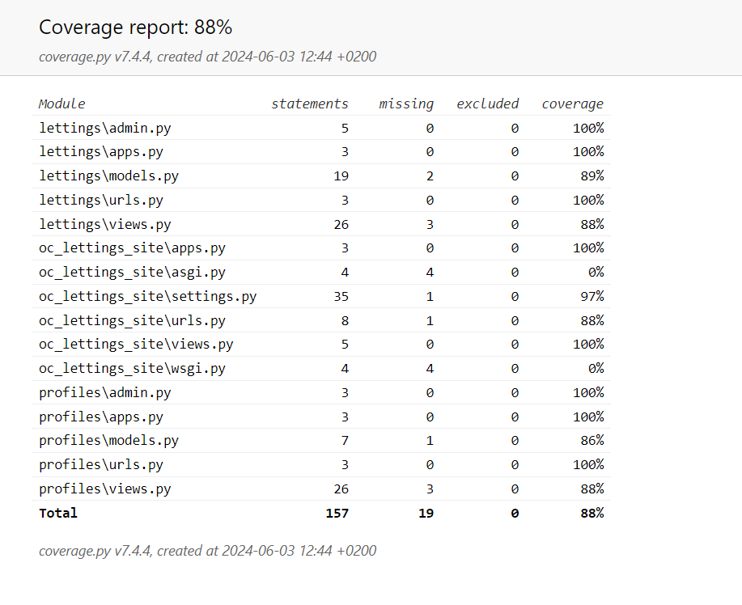

Tests and linting
You can run the tests of the application by launch the command:
python manage.py test
You will see the number of test execute in the shell

Or you can select a test by add the directory:
python manage.py test lettings
For see the coverage tests of your application:
pytest --cov=.
You can see in the shell the test coverage:

You can generate an html report with the option coverage-report:
pytest --cov=. --cov-report html
This will be create a directory `htmlcov`. Go on this directory and click on index.html to see the report on your browser:
For the coverage test, we decided to omit some directory optional. But if for any reasons, you want to add some others files you can change de files “setup.cfg”.
You can add/remove a file or a directory of your choices:
Linting
You can see if the code respect the Pep8 convention
flake8
You can generate a html report via this command:
flake8 --format=html --htmldir=flake-report
“flake-report” is the name of the directory where you want that the report will be generate.
Go on the directory and open “index.html”
Like for coverage report, you can change the linting configuration in the setup-cfg file.
You can add/remove a file or a directory of your choices. You can also add/remove rules:

Reference Tests.